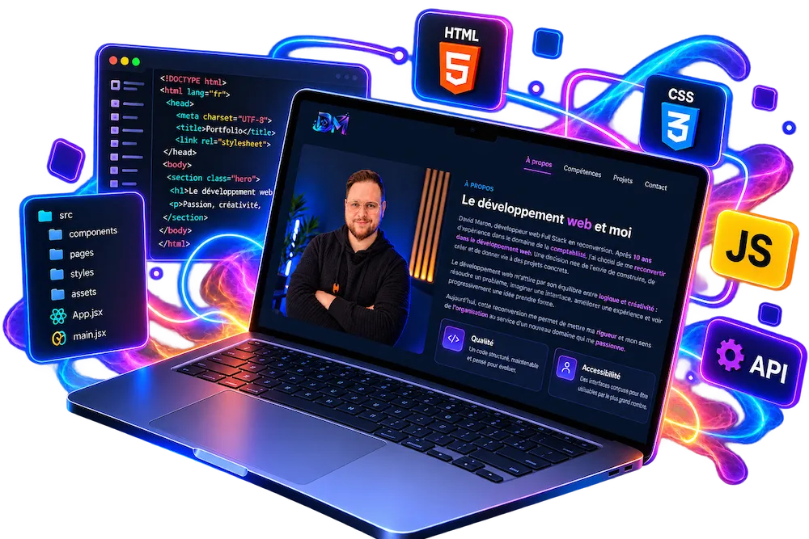
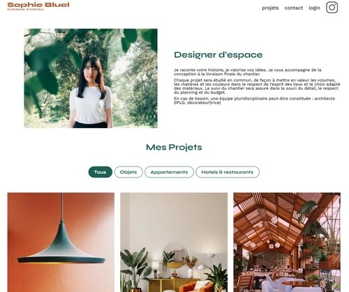
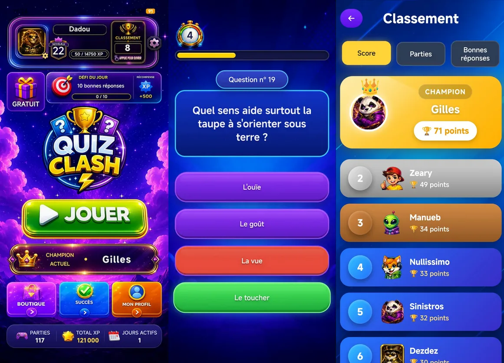

Front-end
- Intégration de maquettes avec HTML, CSS et Sass
- Dynamisation des interfaces avec JavaScript
- Conception d'interfaces React adaptatives et modulaires
DÉVELOPPEUR WEB FULL STACK
Des interfaces pensées pour être fluides et intuitives, où chaque détail trouve sa place pour rendre le web plus simple et agréable.


À PROPOS
David Maron, développeur web Full Stack en reconversion. Après 10 ans d'expérience dans le domaine de la comptabilité, j'ai choisi de me reconvertir dans le développement web. Une décision née de l'envie de construire, de créer et de donner vie à des projets concrets. Le développement web m'attire par son équilibre entre logique et créativité : résoudre un problème, imaginer une interface, améliorer une expérience et voir progressivement une idée prendre forme.
Aujourd'hui, cette reconversion me permet de mettre ma rigueur et mon sens de l' organisation au service d'un nouveau domaine qui me passionne.
Mon expérience en comptabilité m'a appris à travailler avec méthode, précision et organisation. Des qualités que je mets aujourd'hui au service du développement web.
J'aime analyser un problème, chercher des solutions et transformer une idée en interface claire, utile et agréable à utiliser.
COMPÉTENCES
MES PROJETS

Audit et optimisation d'un site existant afin d'améliorer ses performances, son référencement naturel, son accessibilité et son fonctionnement.
Correction des anomalies JavaScript, optimisation importante des images et amélioration de l'accessibilité, du SEO et des performances du site.
Poursuivre les tests manuels d'accessibilité et les optimisations lors des futures évolutions du site.
Transformer un site statique en portfolio dynamique capable de communiquer avec une API REST et de gérer une authentification administrateur.
Création dynamique des projets, filtres par catégories, authentification JWT et interface d'administration. Ce projet m'a permis d'approfondir JavaScript, la manipulation du DOM et les échanges avec une API REST.
Continuer à améliorer la séparation des responsabilités et la maintenabilité du code.


Refondre une plateforme de location immobilière en React à partir de maquettes Figma desktop et mobile.
Création de composants React réutilisables, navigation avec React Router, récupération des données depuis une API REST et adaptation responsive.
Continuer à enrichir les fonctionnalités et à améliorer l'expérience utilisateur.
Création d'une application mobile de quiz de culture générale en JavaScript, avec l'objectif de proposer une expérience ludique, amusante et adaptée au mobile.
Développement d'un système de questions avec chronomètre, score, ainsi qu'un classement entre joueurs. Le jeu dispose également d'un système de succès à débloquer qui permet de gagner des avatars exclusifs ainsi qu'un abonnement VIP pour ne plus voir les pubs et pouvoir enchainer les parties plus rapidement. L'application est disponible sur le Google Play Store, avec une gestion des données et de l'authentification via Firebase.
Continuer à enrichir le contenu, améliorer l'expérience utilisateur et développer de nouvelles fonctionnalités pour fidéliser les joueurs.

CONTACT
Vous avez un projet web ou souhaitez échanger ? N'hésitez pas à me contacter.